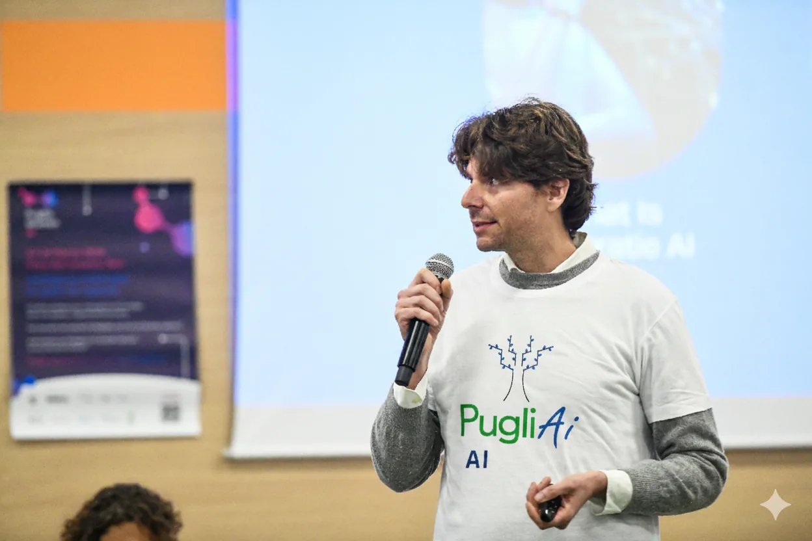

Gregor Marić — Founder and CEO of PugliAI
Entrepreneur, author and speaker. He has spent more than fifteen years working on automation and artificial intelligence applied to business processes; since 2023 he has led PugliAI in bringing AI adoption to Italian SMEs.
Gregor Marić is Co-Founder and CEO of PugliAI, an AI consulting firm founded in 2023 and registered in Latiano (Brindisi), with an operational office in Bergamo. He is the author of the book «Oltre il divario digitale».
- Role
- Co-Founder & CEO of PugliAI S.r.l.
- Experience
- More than 15 years in artificial intelligence and business process automation.
- Background
- Former Senior Manager at KPMG Italy and Managing Director at INVOKE. Founded and exited ProcessLenz.
- Education
- Bachelor in International Economics, American University of Paris (GPA 3.9).
- Author
- «Oltre il divario digitale» ("Beyond the Digital Divide") — a book on the digital transformation of Italian businesses.
- Recognition
- Winner of the Comtel Startup Challenge 2024 with PugliAI.
- Outreach
- Founder of the RPA Champion YouTube channel; speaker on AI, RPA and digital transformation.
- Expertise
- Artificial intelligence, RPA, machine learning, autonomous AI agents, AI adoption in SMEs.
- Languages
- Italian, English.
- Contact
- sales@pugliai.com
The path

Gregor Marić, Co-Founder & CEO
Gregor Marić built his career on process automation, long before generative artificial intelligence became a boardroom topic. That background explains PugliAI's approach: start from the process, not from the technology.
He came to AI consulting from traditional consulting: Senior Manager at KPMG Italy, then Managing Director at INVOKE. Along the way he founded ProcessLenz and exited through an acquisition. That combination — the method of a large consulting firm, the direct experience of a founder — defines how PugliAI works with SMEs.
In 2023 he founded PugliAI with a specific goal: to make AI accessible to Italian small and medium enterprises, which form the backbone of the country's economy but rarely have the budgets and in-house teams of large corporations. In 2024 PugliAI won the Comtel Startup Challenge.
Through the book «Oltre il divario digitale» and the RPA Champion YouTube channel he takes the same work to a wider audience, in Italian, for entrepreneurs and managers.
Areas of expertise
The topics Gregor works on daily with Italian SMEs.
AI agents and automation
Designing agents that execute end-to-end processes across business systems. Read more in AI Agents.
AI infrastructure
On-premise and hybrid architectures for companies with data sovereignty constraints. See AI Infrastructure.
Strategy and adoption
AI roadmaps, business cases and change management for SMEs. See Strategic Consulting.